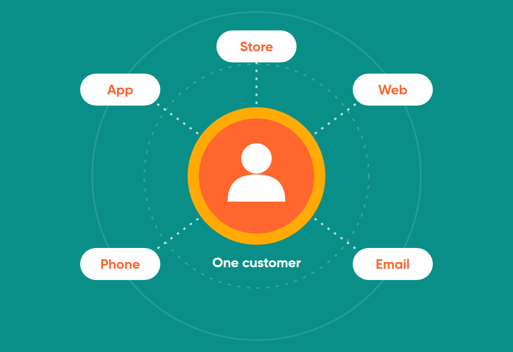

The tile sits fourth in the overview, following the team’s service order. Even-numbered tiles have the image on the left and a coloured band behind.

One trusted customer record, governed definitions, audiences sent to every channel and an agentic AI workspace for marketing, built on the CDP and warehouse you already run.
Explore/product/customer-data-platform/ (in this review copy it opens the local page).pro-cdp-transformation follows the pattern of the other tiles (pro-generative-ai-solution and so on), so the Capabilities menu entry can link straight to it.assets/img/cdp-tile.png, 1280 by 880 (shown at 640 by 440). Upload it to the media library.